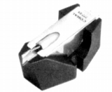
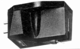
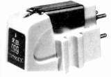
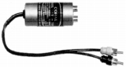

CORAL（コーラル）
コーラル音響の商標。かつてスピーカーを中心に活動していたメーカーで、自作派向けのユニット供給でも大手だった。1970年代にはカートリッジや昇圧トランスなどアナログディスク関連の製品も出してした。1970年代前半時点でMC型をラインナップするなどスピーカー以外ではかなり力を入れたジャンルだったが大きな成功は得られなかったようだ。スピーカーより早い時期、1985年頃撤退した。メーカ自体も1990年代に消滅したらしいが、詳細はわからない。
�T.カートリッジ
1.MC型カートリッジ


（左 777EX 右 MC-8)2.MM型カートリッジ

(666EX)�U.昇圧トランス・ヘッドアンプ

(T-100)�V.その他
ヘッドシェル 2点 シェルリード 1点